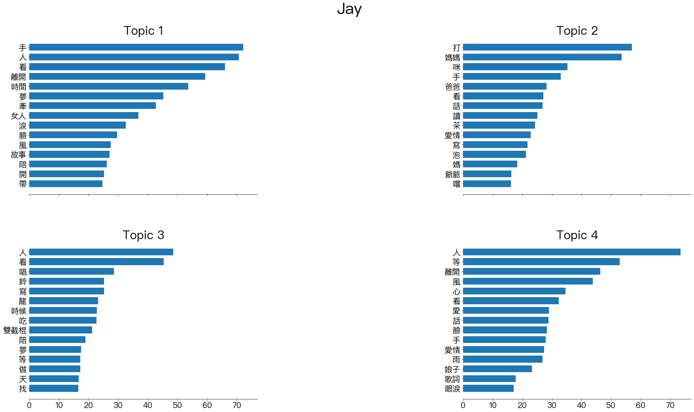

Assignment X: Topic Modeling Dcard Lyrics¶
Import necessary dependencies and settings¶
import warnings
warnings.filterwarnings("ignore")#, category=DeprecationWarning)
import pandas as pd
import numpy as np
import re
import nltk
import matplotlib.pyplot as plt
import nltk, random
from nltk.corpus import movie_reviews
from nltk.stem import PorterStemmer
pd.options.display.max_colwidth = 200
%matplotlib inline
Sample corpus of text documents¶
Jay Songs¶
import pickle
with open('jay_seg.pickle', 'rb') as f:
jay_seg = pickle.load(f)
corpus_df =pd.read_csv('../../../RepositoryData/data/data-chinese-songs-jaychou.csv')
corpus_df.head()
| title | lyric | |
|---|---|---|
| 0 | 我是如此相信 | 鳥群離開了森林 整座天空很灰心\n蝴蝶不再被吸引 玫瑰盛開的很安靜\n遠方的風雨不停 城市蒼白而孤寂\n徘徊無助的人群 焦慮著何時放晴\n故事裡能毀壞的只有風景\n誰也摧毀不了我們的夢境\n弦月旁的流星劃過了天際\n我許下的願望該向誰去說明\n隕石在浩瀚的宇宙間旅行\n璀璨的夜空裡漫天的水晶\n我的禱告終於有了回音\n我是如此相信 在背後支撐的是你\n一直與我並肩而行 仰望等太陽升起\n聽... |
| 1 | 英雄 | 人生不是ㄧ個人的遊戲\nㄧ起奮鬥ㄧ起超越ㄧ起殺吧sup兄弟\n好戰好勝戰勝逆命\n管他天賦夠不夠我們都還需要再努力\n你的劍就是我的劍\n艾希的箭可不可以準ㄧ點 嘿\n你打野我來控兵線\n不要隨便慌張就交閃現\n旋轉跳躍你閉著眼\n卡特轉完會讓你閉上眼\n悟空蓋倫也轉圈圈\n盲僧李先生ㄧ腳把你 踢回老家\n擊殺 雙殺 三殺 Penta kill\n扛塔 偷拆 插眼讓我傳送\n... |
| 2 | 雙截棍 | 岩燒店的煙味瀰漫 隔壁是國術館\n店裡面的媽媽桑 茶道 有三段\n教拳腳武術的老板 練鐵沙掌 耍楊家槍\n硬底子功夫最擅長 還會金鐘罩鐵布衫\n他們兒子我習慣 從小就耳濡目染\n什麼刀槍跟棍棒 我都耍的有模有樣\n什麼兵器最喜歡 雙截棍柔中帶剛\n想要去河南嵩山 學少林跟武當\n幹什麼(客) 幹什麼(客) 呼吸吐納心自在\n幹什麼(客) 幹什麼(客) 氣沉丹田手... |
| 3 | 開不了口 | 才離開沒多久就開始 擔心今天的妳過得好不好\n整個畫面是妳 想妳想的睡不著\n嘴嘟嘟那可愛的模樣 還有在妳身上香香的味道\n我的快樂是妳 想妳想的都會笑\n沒有妳在我有多難熬(沒有妳在我有多難熬多煩惱)\n沒有妳煩我有多煩惱(沒有妳煩我有多煩惱多難熬)\n穿過雲層 我試著努力向妳奔跑\n愛才送到 妳卻已在別人懷抱\n就是開不了口 讓她知道\n我一定會呵護著妳 也逗妳笑\n妳... |
| 4 | 床邊故事 | 從前從前有隻貓頭鷹 牠站在屋頂\n屋頂後面一遍森林 森林很安靜\n安靜的鋼琴在大廳 閣樓裡 仔細聽\n仔細聽 叮叮叮 什麼聲音\n乖乖睡 不要怕 聽我說\n乖乖睡 醒來就 吃蘋果\n不睡覺 的時候 有傳說\n會有人 咬你的 小指頭\n這故事 繼續翻頁 再翻頁\n你繼續 不想睡 我卻想睡\n然後我準備 去打開衣櫃\n去看看 躲著誰 去看看 躲著誰\... |
norm_corpus = [' '.join([w for w,p in d if p in ['Na','VC']]) for d in jay_seg]
norm_corpus[0]
'鳥群 離開 森林 灰心 蝴蝶 玫瑰 風雨 人群 故事 毀壞 風景 摧毀不了 夢境 弦月 流星 劃過 許下 願望 隕石 宇宙 水晶 回音 支撐 仰望 太陽 鳥群 聲音 守候 人 信心 雙手 彈奏 出 鳥群 離開 森林 蝴蝶 玫瑰 風雨 人群 故事 毀壞 風景 摧毀不了 夢境 弦月 流星 許下 願望 隕石 宇宙 水晶 回音 支撐 仰望 等 太陽 鳥群 聲音 守候 人 信心 雙手 彈奏 出 支撐 仰望 等 太陽 鳥群 聲音 守候 人 信心 雙手 彈奏出'
Bag of Words Model¶
Bag-of-words model is the simplest way to vectorize texts into numeric representations.
In short, it is a method to represent a text using its word frequency list.
The sequential order of words in the text is therefore naively ignored.
from sklearn.feature_extraction.text import CountVectorizer
# get bag of words features in sparse format
cv = CountVectorizer(min_df=2, max_df=1.0,token_pattern=r'[^\s0-9]+')
cv_matrix = cv.fit_transform(norm_corpus)
cv_matrix
<212x1353 sparse matrix of type '<class 'numpy.int64'>'
with 6039 stored elements in Compressed Sparse Row format>
# view dense representation
# warning might give a memory error if data is too big
cv_matrix = cv_matrix.toarray()
cv_matrix
array([[0, 0, 0, ..., 0, 0, 0],
[0, 0, 0, ..., 0, 0, 0],
[0, 0, 0, ..., 0, 0, 0],
...,
[0, 0, 0, ..., 0, 0, 0],
[0, 0, 0, ..., 0, 0, 0],
[0, 0, 0, ..., 0, 0, 0]])
# get all unique words in the corpus
vocab = np.array(cv.get_feature_names())
# show document feature vectors
pd.DataFrame(cv_matrix, columns=vocab)
| .. | ... | 一 | 一生 | 一統 | 上 | 上帝 | 下 | 世事 | 世人 | ... | 默 | 默劇 | 默契 | 默片 | 點 | 點亮 | 點心 | 鼻子 | 龍 | 龍捲風 | |
|---|---|---|---|---|---|---|---|---|---|---|---|---|---|---|---|---|---|---|---|---|---|
| 0 | 0 | 0 | 0 | 0 | 0 | 0 | 0 | 0 | 0 | 0 | ... | 0 | 0 | 0 | 0 | 0 | 0 | 0 | 0 | 0 | 0 |
| 1 | 0 | 0 | 0 | 0 | 0 | 0 | 0 | 0 | 0 | 0 | ... | 0 | 0 | 0 | 1 | 0 | 0 | 0 | 0 | 0 | 0 |
| 2 | 0 | 0 | 0 | 0 | 0 | 0 | 0 | 0 | 0 | 0 | ... | 0 | 0 | 0 | 0 | 0 | 0 | 0 | 0 | 0 | 0 |
| 3 | 0 | 0 | 0 | 0 | 0 | 0 | 0 | 0 | 0 | 0 | ... | 0 | 0 | 0 | 0 | 0 | 0 | 0 | 0 | 0 | 0 |
| 4 | 0 | 0 | 0 | 0 | 0 | 0 | 0 | 0 | 0 | 0 | ... | 0 | 0 | 0 | 0 | 0 | 0 | 0 | 0 | 0 | 0 |
| ... | ... | ... | ... | ... | ... | ... | ... | ... | ... | ... | ... | ... | ... | ... | ... | ... | ... | ... | ... | ... | ... |
| 207 | 0 | 0 | 0 | 0 | 0 | 0 | 0 | 0 | 0 | 0 | ... | 0 | 0 | 0 | 0 | 0 | 0 | 0 | 0 | 0 | 0 |
| 208 | 0 | 0 | 0 | 0 | 0 | 0 | 0 | 0 | 0 | 0 | ... | 0 | 0 | 0 | 0 | 0 | 0 | 0 | 0 | 0 | 0 |
| 209 | 0 | 0 | 0 | 0 | 0 | 0 | 0 | 0 | 0 | 0 | ... | 0 | 0 | 0 | 0 | 0 | 0 | 0 | 0 | 0 | 0 |
| 210 | 0 | 0 | 0 | 0 | 0 | 0 | 0 | 0 | 0 | 0 | ... | 0 | 0 | 0 | 0 | 0 | 0 | 0 | 0 | 0 | 0 |
| 211 | 0 | 0 | 0 | 0 | 0 | 0 | 0 | 0 | 0 | 0 | ... | 0 | 0 | 0 | 0 | 0 | 0 | 0 | 0 | 0 | 0 |
212 rows × 1353 columns
Latent Dirichlet Allocation¶
Find optimal topic number
%%time
from sklearn.decomposition import LatentDirichletAllocation
from sklearn.model_selection import GridSearchCV
# Options to try with our LDA
# Beware it will try *all* of the combinations, so it'll take ages
search_params = {
'n_components': [4,5,6,7,8],
'learning_decay': [.5, .7]
}
# Set up LDA with the options we'll keep static
model = LatentDirichletAllocation(learning_method='batch', max_iter = 10000, random_state=0)
# Try all of the options
gridsearch = GridSearchCV(model, param_grid=search_params, n_jobs=-1, verbose=1)
gridsearch.fit(cv_matrix)
## Save the best model
best_lda = gridsearch.best_estimator_
## took 2h 42min 28s
Fitting 5 folds for each of 10 candidates, totalling 50 fits
[Parallel(n_jobs=-1)]: Using backend LokyBackend with 4 concurrent workers.
[Parallel(n_jobs=-1)]: Done 42 tasks | elapsed: 126.8min
[Parallel(n_jobs=-1)]: Done 50 out of 50 | elapsed: 149.6min finished
CPU times: user 11min 43s, sys: 4.01 s, total: 11min 47s
Wall time: 2h 42min 28s
cv_results_df = pd.DataFrame(gridsearch.cv_results_)
cv_results_df
| mean_fit_time | std_fit_time | mean_score_time | std_score_time | param_learning_decay | param_n_components | params | split0_test_score | split1_test_score | split2_test_score | split3_test_score | split4_test_score | mean_test_score | std_test_score | rank_test_score | |
|---|---|---|---|---|---|---|---|---|---|---|---|---|---|---|---|
| 0 | 713.381181 | 18.402268 | 0.025866 | 0.003338 | 0.5 | 4 | {'learning_decay': 0.5, 'n_components': 4} | -18753.338413 | -18605.844619 | -18747.728093 | -19624.055808 | -19895.424750 | -19125.278337 | 527.749817 | 1 |
| 1 | 680.229616 | 14.324856 | 0.030696 | 0.003006 | 0.5 | 5 | {'learning_decay': 0.5, 'n_components': 5} | -19425.584131 | -19268.965549 | -19345.123411 | -20410.443174 | -20591.719535 | -19808.367160 | 570.650188 | 3 |
| 2 | 645.259369 | 19.034365 | 0.034191 | 0.005401 | 0.5 | 6 | {'learning_decay': 0.5, 'n_components': 6} | -20099.794346 | -19925.540086 | -20005.228409 | -21066.560406 | -21177.728864 | -20454.970422 | 548.659544 | 5 |
| 3 | 633.004029 | 11.746051 | 0.029470 | 0.002411 | 0.5 | 7 | {'learning_decay': 0.5, 'n_components': 7} | -20633.710792 | -20421.088056 | -20546.818837 | -21695.850067 | -21796.748967 | -21018.843344 | 598.651963 | 7 |
| 4 | 609.596647 | 23.534896 | 0.028508 | 0.003966 | 0.5 | 8 | {'learning_decay': 0.5, 'n_components': 8} | -21080.415836 | -21030.644479 | -21083.634725 | -22302.460638 | -22311.274387 | -21561.686013 | 608.734573 | 9 |
| 5 | 701.364410 | 13.725163 | 0.029705 | 0.002210 | 0.7 | 4 | {'learning_decay': 0.7, 'n_components': 4} | -18753.338413 | -18605.844619 | -18747.728093 | -19624.055808 | -19895.424750 | -19125.278337 | 527.749817 | 1 |
| 6 | 711.663058 | 50.873928 | 0.028580 | 0.002723 | 0.7 | 5 | {'learning_decay': 0.7, 'n_components': 5} | -19425.584131 | -19268.965549 | -19345.123411 | -20410.443174 | -20591.719535 | -19808.367160 | 570.650188 | 3 |
| 7 | 758.373666 | 28.301840 | 0.030743 | 0.006270 | 0.7 | 6 | {'learning_decay': 0.7, 'n_components': 6} | -20099.794346 | -19925.540086 | -20005.228409 | -21066.560406 | -21177.728864 | -20454.970422 | 548.659544 | 5 |
| 8 | 777.899082 | 17.296313 | 0.023996 | 0.002684 | 0.7 | 7 | {'learning_decay': 0.7, 'n_components': 7} | -20633.710792 | -20421.088056 | -20546.818837 | -21695.850067 | -21796.748967 | -21018.843344 | 598.651963 | 7 |
| 9 | 737.206787 | 88.862735 | 0.033960 | 0.011844 | 0.7 | 8 | {'learning_decay': 0.7, 'n_components': 8} | -21080.415836 | -21030.644479 | -21083.634725 | -22302.460638 | -22311.274387 | -21561.686013 | 608.734573 | 9 |
import seaborn as sns
sns.pointplot(x="param_n_components", y="mean_test_score", hue="param_learning_decay", data=cv_results_df)
<AxesSubplot:xlabel='param_n_components', ylabel='mean_test_score'>
## Permanent Setting Version
plt.rcParams['font.sans-serif']=["PingFang HK"]
def plot_top_words(model, feature_names, n_top_words, title, fig_grid=[2,2]):
fig, axes = plt.subplots(fig_grid[0], fig_grid[1], figsize=(30, 15), sharex=True)
axes = axes.flatten()
for topic_idx, topic in enumerate(model.components_):
top_features_ind = topic.argsort()[:-n_top_words - 1:-1]
top_features = [feature_names[i] for i in top_features_ind]
weights = topic[top_features_ind]
ax = axes[topic_idx]
ax.barh(top_features, weights, height=0.7)
ax.set_title(f'Topic {topic_idx +1}',
fontdict={'fontsize': 30})
ax.invert_yaxis()
ax.tick_params(axis='both', which='major', labelsize=20)
for i in 'top right left'.split():
ax.spines[i].set_visible(False)
fig.suptitle(title, fontsize=40)
plt.subplots_adjust(top=0.90, bottom=0.05, wspace=0.90, hspace=0.3)
plt.show()
plot_top_words(best_lda, cv.get_feature_names(), n_top_words=15, title="Jay")

doc_topic_matrix = best_lda.transform(cv_matrix)
num_of_topic = 4
# %%time
# from sklearn.decomposition import LatentDirichletAllocation
# lda = LatentDirichletAllocation(n_components=num_of_topic, max_iter=10000, random_state=0,
# max_doc_update_iter=50, learning_method='online',
# batch_size=50, learning_offset = 50, n_jobs = -1)
# dt_matrix = lda.fit_transform(cv_matrix) # document matrix
# features = pd.DataFrame(dt_matrix, columns = ["T"+str(n) for n in range(1,num_of_topic+1)])
# features
Show topics and their weights¶
# tt_matrix = lda.components_ # topic matrix
# for topic_weights in tt_matrix:
# topic = [(token, weight) for token, weight in zip(vocab, topic_weights)]
# topic = sorted(topic, key=lambda x: -x[1])
# topic = [item for item in topic if item[1] > 0.6]
# print(topic)
# print()
topic_terms = best_lda.components_
top_terms = 20
topic_keywords_idxs = np.argsort(-np.absolute(topic_terms), axis=1)[:,:top_terms]
topic_keywords = vocab[topic_keywords_idxs]
topics = [', '.join(w) for w in topic_keywords]
pd.set_option('display.max_colwidth', None)
topics_df = pd.DataFrame(topics,
columns = ['Keywords per Topic'],
index = ["Topic"+str(n) for n in range(1,num_of_topic+1)])
topics_df
| Keywords per Topic | |
|---|---|
| Topic1 | 手, 人, 看, 離開, 時間, 夢, 牽, 女人, 淚, 臉, 風, 故事, 陪, 開, 帶, 眼淚, 望, 放, 功夫, 雨 |
| Topic2 | 打, 媽媽, 咪, 手, 爸爸, 看, 話, 讀, 茶, 愛情, 寫, 泡, 媽, 爺爺, 嚐, 冰淇淋, 味道, 心, 牽, 事 |
| Topic3 | 人, 看, 唱, 鈴, 寫, 龍, 時候, 吃, 雙截棍, 陪, 夢, 等, 做, 天, 找, 拿, 愛情, 錢, 手, 使用 |
| Topic4 | 人, 等, 離開, 風, 心, 看, 愛, 話, 臉, 手, 愛情, 雨, 娘子, 歌詞, 眼淚, 陽光, 光, 感覺, 靈魂, 耍 |
pd.options.display.float_format = '{:,.5f}'.format
pd.set_option('display.max_colwidth', 200)
dt_df = pd.DataFrame(doc_topic_matrix,
columns=["Topic"+str(n) for n in range(1,num_of_topic+1)])
max_contrib_topics = dt_df.max(axis=0)
dominant_topics = max_contrib_topics.index
contrib_perc = max_contrib_topics.values
document_numbers = [dt_df[dt_df[t]==max_contrib_topics.loc[t]].index[0]
for t in dominant_topics]
documents = [norm_corpus[i] for i in document_numbers]
documents_df = pd.DataFrame({'Dominant Topic': dominant_topics,
'Contribution%': contrib_perc,
'DOCID': document_numbers,
'Topic': topics_df['Keywords per Topic'],
'Text': documents})
documents_df
| Dominant Topic | Contribution% | DOCID | Topic | Text | |
|---|---|---|---|---|---|
| Topic1 | Topic1 | 0.99505 | 111 | 手, 人, 看, 離開, 時間, 夢, 牽, 女人, 淚, 臉, 風, 故事, 陪, 開, 帶, 眼淚, 望, 放, 功夫, 雨 | 望 星星 望 星星 望 星星 望 星 乘 風 雲 形狀 風 吃掉 載 載 陽光 蝴蝶 花 佈滿 夕陽 你我 迎 風 手 牽 手 望 天 看 星星 線 背對背 許下 心願 看 星 手 牽 手 望 天 看 星星 連成 線 背對背 許下 心願 看 星 實現 朋友 歌聲 手 手 歌曲 燈 時間 分寸 輕重 分 支撐 看 身影 黑暗 夢 空間 抱 臉 看 看 夢 畫面 故事 離 時間 抱 挽留 燈... |
| Topic2 | Topic2 | 0.99294 | 120 | 打, 媽媽, 咪, 手, 爸爸, 看, 話, 讀, 茶, 愛情, 寫, 泡, 媽, 爺爺, 嚐, 冰淇淋, 味道, 心, 牽, 事 | 爺爺 泡 茶 味道 泡 茶 名 利 拿 爺爺 泡 茶 味道 爺爺 泡 茶 口感 味覺 陸羽 泡 茶 山水畫 山泉 地表 臉 泉水 礦層巖 爺爺 栽種 樟木 樹苗 躲 屋簷 爺爺 抽 煙 陸羽 寫 茶經 翻閱 字典 字眼 事 海角 時間 茶桌 樟木 年輪 鏡頭 臉 年 爺爺 手繭 泡 水 茶色 爺爺 泡 茶 味道 家 挑剔 口感 味覺 陸羽 泡 茶 名 利 拿 牽 馬 爺爺 泡 茶 味... |
| Topic3 | Topic3 | 0.99478 | 194 | 人, 看, 唱, 鈴, 寫, 龍, 時候, 吃, 雙截棍, 陪, 夢, 等, 做, 天, 找, 拿, 愛情, 錢, 手, 使用 | 等 寫完 詞 出 專輯 歌 時期 梯田 看過 綠地 攝影 畫面 寫 詞 詩人 公車 看 窗 牛 啃 草 自由自在 那魯灣 牛兒 水溝 流 夢 收割期 人們 汗水 畫面 作品 油畫 拿到 獎狀 用 哼 撕掉 換回 自然 梯田 看 西洋片 水牛 畫 掛 牆壁 人們 蒸蒸日上 遊客 看看 窗 景點 牛兒 那魯灣 利用 利用 人類 破壞 自然 生態 藝術 砍下 樹 醬 裝飾 事 相機 紀錄 ... |
| Topic4 | Topic4 | 0.99521 | 186 | 人, 等, 離開, 風, 心, 看, 愛, 話, 臉, 手, 愛情, 雨, 娘子, 歌詞, 眼淚, 陽光, 光, 感覺, 靈魂, 耍 | 前奏 巷 章 推向 接近 事實 石楠 煙斗 霧 樹 圓形 盔甲 騎士 臂 徽章 人 馬車 聲響 拜訪 月光 血色 手槍 手杖 蠟像 珠寶箱 符號 假象 堆砌 證據 埋葬 嘲弄 樂章 正義 終場 寫上 點亮 灰燼 微光 晨曦 光 風乾 雨滴 清洗 牆 黑色 墨 關上 布幕 間奏 事實 穿 腳印 土壤 花香 服裝 人 理由 戴 面具 動機 名字 欲望 人性 沼澤 弄髒 真相 鐵床 圖 拼... |
import pyLDAvis
import pyLDAvis.sklearn
import dill
pyLDAvis.enable_notebook()
cv_matrix2 = np.matrix(cv_matrix)
pyLDAvis.sklearn.prepare(best_lda, cv_matrix2, cv, mds="mmds")
Clustering documents using topic model features¶
from sklearn.cluster import KMeans
km = KMeans(n_clusters=num_of_topic, random_state=0)
km.fit_transform(features)
cluster_labels = km.labels_
cluster_labels = pd.DataFrame(cluster_labels, columns=['ClusterLabel'])
pd.concat([corpus_df, cluster_labels], axis=1)
Visualize topic distributions¶
x_axis = corpus_df.index
y_axis = dt_df
fig, ax = plt.subplots(figsize=(20,5))
# Plot a stackplot - https://matplotlib.org/3.1.1/gallery/lines_bars_and_markers/stackplot_demo.html
ax.stackplot(x_axis, y_axis.T, baseline='wiggle', labels=y_axis.columns)
# Move the legend off of the chart
ax.legend(loc=(1.04,0))
/Users/Alvin/.local/lib/python3.7/site-packages/ipykernel/ipkernel.py:287: DeprecationWarning: `should_run_async` will not call `transform_cell` automatically in the future. Please pass the result to `transformed_cell` argument and any exception that happen during thetransform in `preprocessing_exc_tuple` in IPython 7.17 and above.
and should_run_async(code)
<matplotlib.legend.Legend at 0x7fe819abc470>
from tmtoolkit.topicmod.evaluate import metric_coherence_gensim
# lda_model - LatentDirichletAllocation()
# vect - CountVectorizer()
# texts - the list of tokenized words
norm_corpus
norm_corpus_tokens = [doc.split() for doc in norm_corpus]
metric_coherence_gensim(measure='c_v',
top_n=10,
topic_word_distrib= lda.components_,
dtm=cv.fit_transform(norm_corpus),
vocab=np.array(cv.get_feature_names()),
texts=norm_corpus_tokens)